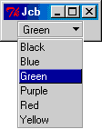
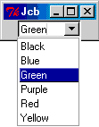

| Exploring Tk::JComboBox - A Tutorial | Document Info | ||||||
|---|---|---|---|---|---|---|---|
| Class Reference | FAQ | Changes/Bug fixes |
|
||||||
JComboBox is yet another combo box implementation for use with the Perl/Tk Toolkit. A combo box is basically a widget that can activate a dropdown listbox with a number of items. After an item is selected, the listbox disappears and that item appears on the widget. This is a space-saving alternative to having a full list in the interface, or having a very long panel of radio buttons.
This implementation is named for the JComboBox used with the Java Swing classes, and those familiar with that component should have no problem using this because the similarities go beyond the name and extend to the method names, and general behavior. When compared to other similar Perl/Tk widgets, JComboBox is probably the most bloated or to put it another way, feature-rich. It has a slightly larger overhead associated with it than any of the others. Simply put, there is more code to support the extra options and methods it offers. In applications I have used it in, I've found that the cost is negligible and that the benefits outweigh the cost, but since requirements and constraints vary, it's probably best to determine this for yourself.
Like the Java Component, this widget has two modes of operation: uneditable and editable. To better distinguish the two modes, for this widget the uneditable mode is called readonly. Each mode has a separate visual appearance, and widget options may have slightly different effects depending on the mode.
| In this mode, the widget looks like a button, though it is actually most like an Optionmenu widget. Pressing anywhere on the face of this button will cause the drop-down listbox to appear. The two main visual differences between the two is that JComboBox can have a scrollbar, and Optionmenu uses a slightly different symbol instead of an arrow. This is the default mode for JComboBox. |  |
|---|
The JComboBox in the image above, was created using the following code:
use Tk; use Tk::JComboBox; my $mw = MainWindow->new(); my $jcb = $mw->JComboBox( -relief => 'groove', -popuprelief => 'groove', -highlightthickness => 0, -choices => [qw/Black Blue Green Purple Red Yellow/] )->pack; MainLoop;
| In this mode, the widget resembles an entry widget with a button to the right of it. The entry allows user to provide a value that might not appear within the list. Optionally, the entry could be used to validate an entry. Visually, this mode resembles the typical combo box as seen on Win32 systems. It also resembles ComboEntry and looks somewhat like BrowseEntry. |  |
|---|
The JComboBox in the image above, was created using the following code:
use Tk; use Tk::JComboBox; my $mw = MainWindow->new(); my $jcb = $mw->JComboBox( -relief => 'sunken', -mode => 'editable', -listbackground => 'white', -popuprelief => 'groove', -highlightthickness => 0, -choices => [qw/Black Blue Green Purple Red Yellow/] )->pack; MainLoop;
The examples above showed how someone might populate a JComboBox statically. This is, set the list of elements by setting one operation. There are times when it might be preferrable to add a single list element, remove one or even select one programmatically. All these things can be done easily, and usually in a variety of different ways. Before going any further, it is useful to know that there are three pieces of information that can be associated with each list element.
The two examples above showed how a list could be populated by assigning an array reference to the -choices ( or it's alias, -listitems ) option. In both of these examples, the name for each element was set, but about the value? What if you wanted to store an RGB value for each element, but didn't necessary want to show that to the user? You could do something like this:
-choices => [
{ -name => 'Black', -value => '#000000' },
{ -name => 'Blue', -value => '#0000ff' },
{ -name => 'Green', -value => '#008000' },
{ -name => 'Purple', -value => '#8000ff' },
{ -name => 'Red', -value => '#ff0000' },
{ -name => 'Yellow', -value => '#ffff00' }
]
You could also use both hash references and scalars if you wished, like this:
-choices => [
'Black',
{ -name => 'Blue', -value => '#0000ff' },
'Green',
'Purple',
'Red',
{ -name => 'Yellow', -value => '#ffff00' }
]
Although -choices can be used to populate or repopulate the list, there are times when it's convenient to insert or add a single element to the list without having to reset all the other elements. There are two methods that provide this functionality: addItem or insertItemAt. Both are very similar.
The following inserts a new item into the list:
## If this line is added to the above examples, then it will add an ## an item called 'Orange' after 'Red', and before 'Yellow'. $jcb->insertItemAt( 5, 'Orange', -value => '#ff8000' );
The following code snippet appends an entry to the end of the list:
$jcb->addItem( 'Orange', -value => '#ff8000' );
Often, it is desirable to have a default item selected, so that when the widget is created, one of the items from the list will appear within the JComboBox's label or entry ( depending on mode ). There are several ways to do this. An item can be marked as selected from within the -choices option, it can be set from within, or it can be selected by one of two method calls.
From within -choices:
## Set Black as the default selected item. You can
## set more than one item in the list as selected, but only
## the last item marked as selected actually is.
-choices => [
{ -name => 'Black', -value => '#000000', -selected => 1 },
{ -name => 'Blue', -value => '#0000ff' },
{ -name => 'Green', -value => '#008000' },
{ -name => 'Purple', -value => '#8000ff' },
{ -name => 'Red', -value => '#ff0000' },
{ -name => 'Yellow', -value => '#ffff00' }
]
From either the addItem or insertItemAt methods:
$jcb->insertItemAt( 5, 'Orange', -value => '#ff8000', -selected => 1 ); $jcb->addItem( 'Orange', -value => '#ff8000', -selected => 1 );
Or from one of two other methods: setSelectedIndex or setSelected.
setSelectedIndex is simple to use:
## Selects the first item in the list $jcb->setSelectedIndex( 0 );
setSelected is a bit more complex. For this method, a pattern is passed as a parameter and the list is searched starting at index 0, until the entire list has been searched or until the first match has been found. But what gets compared, and how does it get compared? That depends on other parameters passed to the method. It has two optional parameters: -type and -mode
The -type option describes the list item type. That is which part of the item is being searched. The type has two possible values: name, the default, and value.
The -mode option describes the search mode. Currently there are three: exact, usecase, and ignorecase. The pattern must exactly match the entire name or value, from beginning to end when the mode is set to exact. Modes usecase and ignorecase match the beginnings of strings ( The specified pattern need not be complete like exact ). The only difference is that usecase is case senstive and ignorecase is not.
A few examples:
use Tk;
use Tk::JComboBox;
my $mw = MainWindow->new();
my $jcb = $mw->JComboBox(
-relief => 'groove',
-popuprelief => 'groove',
-highlightthickness => 0,
-choices => [
{ -name => 'Black', -value => 1},
{ -name => 'Blue', -value => 2},
{ -name => 'Green', -value => 3},
{ -name => 'Purple' -value => 4},
'Red',
{ -name => 'Yellow' -value => 5 }]
)->pack;
## Selects the last element, 'Yellow' using defaults for -type and -mode
$jcb->setSelected( 'Yellow' );
## Selects the list item 'Purple', using default for -mode
$jcb->setSelected( '5', -type => 'value' );
## Selects the list item 'Red', using the default for -mode
## Remember that 'Red' is both the name and value for that item
$jcb->setSelected( 'Red', -type => 'value' );
## Fails! There are no list item that begin with 'bl'
## current selection unchanged
$jcb->setSelected( 'bl', -mode => 'usecase' );
## Succeeds! Selects 'Black' - the first matching item
$jcb->setSelected('bl', -mode => 'ignorecase' );
MainLoop;
Removing elements is even easier than adding them. There are two methods provided to do this: removeAllItems() and removeItemAt( index ).
To remove everything:
$jcb->removeAllItems();
To remove a single item (the third in the list):
$jcb->removeItemAt( 2 );
There are several methods that extracts information related to invidual entries. Many of these are similar, and some are present only as a convenience. Among these are:
These two methods are nearly the same. getItemNameAt retrieves the displayed item or name at the given index, and getItemValueAt returns the value associated with a list item ( or the item name, if the item doesn't have a value ).
The first method of this bunch returns the index, of the selected item, and strictly speaking, the second two methods are not really needed, because the getSelectedIndex when used with getItemNameAt or getItemValueAt will do exactly what the getSelectedName and getSelectedValue methods do. They are only provided as a convenience.
Entry widgets can be validated. There are different validate modes set using the -validate option, and custom validation procedures can be created using the -validatecommand option. Because JComboBox uses an entry widget for the editable mode, it also can use this approach to validation.
Unlike Entry, JComboBox has a built-in list of items that it can use to perform validation. This can be useful for very long lists of items. Long lists can be a hassle for a user interacting with a user interface. Although the -maxrows option can be set to limit the size of the listbox, and prevent it from filling the screen (and beyond), long lists can test the patience of someone who needs to go through all the options -- especially someone who knows that an item exists and just needs to get there.
For this reason, there are two additional values for -validate that Entry does not have: csmatch, and match. Both of these work nearly the same, the only difference is that csmatch is case sensitive and match is not. When -validate is set to one of the 'match' methods, an additional set of bindings are set. and functionality for the editable mode is enhanced slightly.
Every time a key is pressed, the current string in the Entry widget will be compared to the name of each item until it finds a match. If a match is found then the list will popup, and the matching listitem will be highlighted. A user can choose to continue typing the entry to get closer to the entry he wants, hit <Return> to select the item, or hit the <Up> or <Down> arrow keys to move the selection.
If no match is found, the letter the user just typed will not be invalid and will not be allowed in the Entry.
When the mouse pointer is above a menu list item, that item is activated. That is, there is some indication that to show that when the button is pressed, which item on the menu will be selected. Combo boxes on Win32 platforms also exhibit this behavior, and so does JComboBox, by default. Other Perl/Tk combo box widgets do not, so this is an optional behavior and it can be disabled by setting -listhighlight to 0.
None at present.